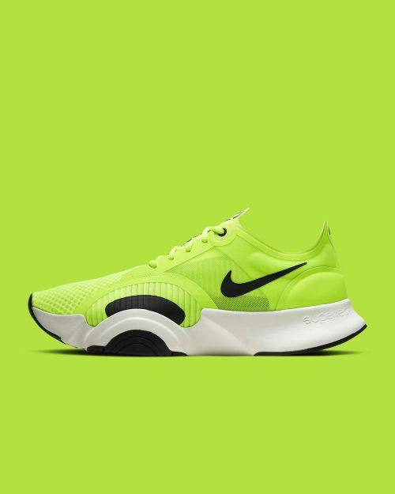
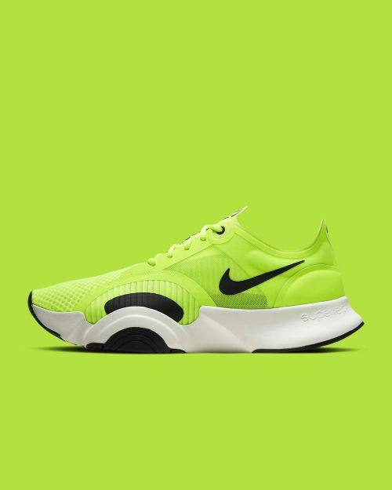

AI tools have emerged as a powerful ally for freelancers across diverse fields. Wondering how incorporating them can enhance your everyday? Let’s explore some key benefits:
1. Turbocharged efficiency: AI tools can automate repetitive tasks, saving you valuable time and energy. This leads to quicker project turnaround and better time management, giving you the freedom to focus on more critical aspects of your business.
2. Elevated quality: AI can assist in generating high-quality content and can even proofread it for errors, ensuring that your work is clear and professional.
3. Boosted productivity & time management: In the freelancing world, efficient time management is paramount. AI tools can aid in creating schedules and to-do lists, helping you prioritize tasks and meet deadlines consistently.
4. Language assistance and global expansion: When dealing with international clients, language barriers can be a significant hurdle. ChatGPT, for instance, can be your language companion, breaking down language barriers and enabling seamless communication and collaboration across borders.
Ready to start incorporating AI into your freelancing day-to-day? Here are some tools you can start using to make a real difference in your freelancing journey:
1. ChatGPT by OpenAI: Your AI writing companion
What you can use it for:
Communication assistance: Compose professional emails, client messages, and responses to FAQs on your Fiverr profile.
Idea generation: Overcome creative blocks by brainstorming ideas for your next project with ChatGPT's assistance.
Strategic marketing: Brainstorm creative Gig titles and descriptions that align with current market trends, setting you apart from the competition to help attract new clients.
2. Bard by Google: The AI editor